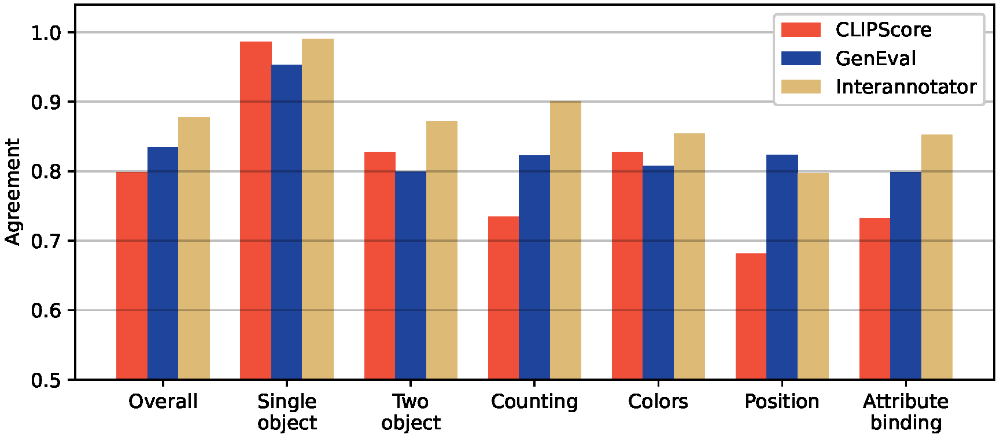

What a model is fed, what it is measured by, and what is inside it.
11 papers · 2,009 avg citations
Written by Junkun Yuan.
Click here to go back to main contents.
Table of contents ▼
T2V-CompBench(CVPR 2025) VBench(CVPR 2024) GenEval(NeurIPS 2023) T2I-CompBench(NeurIPS 2023)
T2V-CompBench: A Comprehensive Benchmark for Compositional Text-to-video Generation
The University of Hong Kong · The Chinese University of Hong Kong · Huawei Noah's Ark Lab
Conference on Computer Vision and Pattern Recognition (CVPR), 2025
Jul 19, 2024 T2V-CompBench (224) code (125)
1,400 prompts in seven compositional video categories, each scored by the MLLM, detector or point tracker that humans agree with most.
Insight. Video composition needs one metric per category. A tracker separates object motion from camera motion, which no frame metric does.
Seven categories (§3.2). Consistent and dynamic attribute binding, spatial relationships, motion binding, action binding, object interactions and generative numeracy each have 200 prompts. Interactions are physical or social, and numeracy counts range from one to eight.
Prompt suite (§3.3–3.4). 260 nouns, 200 active verbs and 100 attributes come from 1.67 million real user prompts of VidProM. GPT-4 writes each prompt with its metadata, and every prompt has an active verb. A prompt has 3.6 nouns, 1.4 verbs and 10.4 words on average.
Grid-LLaVA (§4.1, App. C). For consistent attributes, actions and interactions, 6 uniformly sampled frames form one image grid for LLaVA. It first describes the video. Then it grades each phrase that GPT-4 parses from the prompt, such as "a blue car", in multiple choice.
D-LLaVA (§4.1, release). For dynamic attributes, GPT-4 parses the initial and the final state, and LLaVA grades single frames against them. The score is , where and grade frame against the two states. Each grade from A to D maps to 1, 0.8, 0.2 or 0.
Middle frames (§4.1, release). The D-LLaVA score is 0 unless more than 65% of the 6 middle frames match one of the two states.
2D spatial relationships (§4.2). GroundingDINO detects both objects in 16 evenly extracted frames and drops duplicates. Object 1 is left of object 2 if and , and a correct pair scores . The video score is the mean over the 16 frame scores.
3D spatial relationships (§4.2). For "in front of" and "behind", Segment Anything gives the object masks from the boxes, and Depth Anything gives a depth map. An object's depth is the mean depth inside its mask. Overlapping boxes in the right depth order score their IoU.
Generative numeracy (§4.2). GroundingDINO counts each class in each of the 16 frames. An object class scores 1 if the detected count matches the prompt, and 0 otherwise. The frame score is the mean over the classes, and the video score is the mean over the frames.
Motion binding (§4.3). GroundingSAM separates the object and the background, and DOT tracks points in both at 8 FPS. The object motion is the object track minus the background track, which removes the camera motion. The score compares this direction with the prompt.
Human correlation (§5.3). Three annotators rate 651 videos from six models for text-video alignment. Each category has 90 videos for 15 prompts, and two categories add 21 real videos. Kendall's and Spearman's against these ratings pick the metric for each category.
Experiments (§5.4). Of 23 models, PixVerse-V3 leads six of the seven categories, and the best dynamic attribute score is 0.0687.
A frame grid beats a video LLM (Tab. 1). PLLaVA has a negative on spatial relationships (−0.1252) and interactions (−0.2233).
Dynamic attributes rarely appear (App. D.2). Of 200 PixVerse-V3 videos, 31 show the relevant elements, and only 9 show a change.
The scoring code. Follow §4 and Appendix C of the paper.
def spatial_2d_frame(boxes_1, boxes_2, relation):
# Score the best detected pair with the right 2D relationship.
if not boxes_1 or not boxes_2:
return 0.0 if not boxes_1 and not boxes_2 else 0.2 # both or one object missing
best = None
for b1 in boxes_1:
for b2 in boxes_2:
dx, dy = b1.cx - b2.cx, b1.cy - b2.cy
actual = ("left" if dx < 0 else "right") if abs(dx) > abs(dy) else ("above" if dy < 0 else "below")
if actual == relation:
spatial = 1 - box_iou(b1, b2) # §4.2
rank = 0.5 * spatial + 0.25 * (b1.conf + b2.conf) # pick the most probable pair
best = max(best or (rank, spatial), (rank, spatial))
return 0.4 if best is None else 0.4 + 0.6 * best[1] # wrong relationship, or correct
def spatial_3d_frame(boxes_1, boxes_2, depth, relation):
# Score an overlapping pair whose mean mask depths are in the right order.
if not boxes_1 or not boxes_2:
return 0.0 if not boxes_1 and not boxes_2 else 0.2 # both or one object missing
scores = []
for b1 in boxes_1:
for b2 in boxes_2:
iou = box_iou(b1, b2)
d1, d2 = depth[sam_mask(b1)].mean(), depth[sam_mask(b2)].mean() # Depth Anything, larger is closer
if iou > 0 and (d1 > d2 if relation == "in front of" else d1 < d2):
scores.append(iou)
return 0.4 + 0.6 * max(scores) if scores else 0.4
def numeracy_frame(counts, expected):
# Each object class scores 1 if its detected count matches the prompt.
return sum(counts.get(obj, 0) == n for obj, n in expected.items()) / len(expected)
def motion_score(obj_track, bg_track, direction, width=856, height=480):
# Subtract the background motion, so that the camera motion cancels.
if obj_track is None:
return 0.0 # object missing
dx, dy = obj_track.mean_displacement() - bg_track.mean_displacement() # §4.3
moved = {"left": dx < 0, "right": dx > 0, "up": dy < 0, "down": dy > 0}[direction]
if not moved:
return 0.2 # detected, but static or the wrong direction
return 0.2 + 0.8 * (abs(dx) / width if direction in ["left", "right"] else abs(dy) / height)
def d_llava(llava, frames, initial, final, grades={"A": 1.0, "B": 0.8, "C": 0.2, "D": 0.0}, ratio=0.65):
# 1. Grade the first and the last frame against the two states.
g = lambda frame, state: grades[llava.grade(frame, state)] # describe first, then grade
score = g(frames[0], initial) * (1 - g(frames[0], final)) * (1 - g(frames[-1], initial)) * g(frames[-1], final)
# 2. Require the middle frames to show one of the states.
middle = [llava.match_score(f, initial, final) > 0 for f in frames[1:-1]] # 3, 2, 1 or 0
return score if sum(middle) > ratio * len(middle) else 0.0
def video_score(frame_scores):
return sum(frame_scores) / len(frame_scores) # the mean over 16 framesVBench: Comprehensive Benchmark Suite for Video Generative Models
Nanyang Technological University · Shanghai AI Laboratory · The Chinese University of Hong Kong · Nanjing University
Conference on Computer Vision and Pattern Recognition (CVPR), 2024
Nov 29, 2023 VBench (2,248) code (1.8K)
16 dimensions of video quality and video-condition consistency, each with its own prompt suite, evaluator and human preference check.
Insight. One number like FVD hides trade-offs, such as still videos that look consistent. Narrow, human-checked dimensions show them.
16 dimensions (§3.1). Video quality has five temporal dimensions and two frame-wise ones. Video-condition consistency has six semantic dimensions, appearance and temporal style, and the overall consistency. Semantics checks the entity types and their attributes.
Subject and background consistency (§3.1). A frame scores the mean cosine similarity of its features to the first and to the previous frame, with DINO features for the subject and CLIP features for the background. The video score is the mean over all frames after the first.
Flickering and smoothness (§3.1). Temporal flickering is , where MAE is the mean absolute difference of consecutive frames of static videos. Motion smoothness drops every other frame, interpolates it back with AMT and scores the error in the same way.
Dynamic degree (§3.1). RAFT estimates the optical flow at 8 FPS, and a frame pair scores the mean of its top 5% flow magnitudes. A video is dynamic if enough pairs pass a threshold of 6 at 256 pixels. A completely static video scores well on the other four temporal dimensions.
Frame quality (§3.1). Aesthetic quality is the LAION aesthetic predictor on CLIP features, divided by 10, and it reflects the layout, the colors and the photo-realism. Imaging quality is the MUSIQ predictor, trained on SPAQ for distortions such as noise and blur, divided by 100.
Semantics (§3.1). GRiT detects the object class and the multiple objects in each frame and captions the colors, and UMT recognizes the human action. Tag2Text captions the scene, such as "ocean" and not "river", and a rule checks four primary types of spatial relationships.
Style and overall consistency (§3.1). CLIP compares the frames with the style text for appearance style, such as "oil painting style" or "cyberpunk style". ViCLIP compares the whole video with the text for temporal style, such as camera motion, and for overall consistency.
Prompt suites (§3.2). About 100 prompts test each dimension, such as a moving subject for subject consistency or a Kinetics-400 action for human action. Eight content categories, such as Animal and Human, have 100 prompts each, labeled by an LLM and cleaned by hand.
Human preference (§3.3, §4.2). For each prompt, four models make five groups of videos, and each group gives six pairs. Annotators judge one dimension only, and the win ratios of VBench and of humans are compared. A win scores 1 and a tie scores 0.5 for each model.
Total score (release). Each dimension is normalized between its Empirical Min and Max, the approximate achievable range. Dynamic degree has the weight 0.5, and the total score is . Empirical Max uses the top-5 WebVid-10M videos of each prompt.
Experiments (§4). On four open models, the win ratios of VBench and of humans have Spearman's from 0.6073 (color) to 0.9980.
A still video scores high (Tab. 1). LaVie has 97.47% background consistency but only 49.72% dynamic degree, near the lowest.
More data does not fix humans (§5). Human scenes are 26% of WebVid-10M, the largest category, but they score among the worst.
The scoring code. Follow §3.1 of the paper and the official release.
def consistency(encoder, frames):
# Compare each frame with the first frame and the previous frame.
feats = F.normalize(encoder(frames), dim=-1) # DINO for the subject, CLIP for the background
sims = []
for i in range(1, len(feats)):
to_prev = torch.clamp(feats[i] @ feats[i - 1], min=0)
to_first = torch.clamp(feats[i] @ feats[0], min=0)
sims.append((to_prev + to_first) / 2) # §3.1
return sum(sims) / len(sims)
def temporal_flickering(frames):
mae = (frames[1:] - frames[:-1]).abs().mean() # pixel values from 0 to 255
return (255 - mae) / 255 # §3.1
def motion_smoothness(interpolator, frames):
# Drop every other frame, interpolate it back, and score the error.
kept, dropped = frames[0::2], frames[1::2]
middle = interpolator(kept[:-1], kept[1:]) # AMT frame interpolation
mae = (middle[:len(dropped)] - dropped[:len(middle)]).abs().mean()
return (255 - mae) / 255
def dynamic_degree(raft, frames, top=0.05, base_threshold=6.0):
# Count the frame pairs with a large flow, at 8 FPS.
threshold = base_threshold * min(frames.shape[-2:]) / 256 # 6 at 256 pixels
moving = 0
for a, b in zip(frames[:-1], frames[1:]):
magnitude = raft(a, b).norm(dim=0).flatten()
score = magnitude.sort(descending=True).values[:int(top * len(magnitude))].mean() # top 5% of the pixels
moving += score > threshold
return float(moving >= round(4 * len(frames) / 16)) # 1 if the video is dynamic
def aesthetic_quality(clip, predictor, frames):
return (predictor(F.normalize(clip.encode_image(frames), dim=-1)) / 10).mean() # LAION aesthetic scale 0-10
def total_score(scores, normalize, quality, semantic, weight={"dynamic degree": 0.5}, quality_weight=4):
# Normalize each dimension with its Empirical Min and Max, then weight the two groups.
low, high = {k: v[0] for k, v in normalize.items()}, {k: v[1] for k, v in normalize.items()}
norm = {k: (scores[k] - low[k]) / (high[k] - low[k]) * weight.get(k, 1) for k in scores} # Empirical Min, Max
quality_score = sum(norm[k] for k in quality) / sum(weight.get(k, 1) for k in quality)
semantic_score = sum(norm[k] for k in semantic) / sum(weight.get(k, 1) for k in semantic)
return (quality_weight * quality_score + semantic_score) / (quality_weight + 1) # releaseGenEval: An Object-Focused Framework for Evaluating Text-to-Image Alignment
University of Washington · Allen Institute for AI · LAION
Advances in Neural Information Processing Systems (NeurIPS), 2023
Oct 17, 2023 GenEval (1,171) code (486)
An object detector and a CLIP color classifier check each generated image against its templated prompt, over six compositional tasks.
Insight. A rule-checked score is also an RL reward. Later RL methods raise it close to its maximum, so it now separates strong models less.
Six tasks (§3.1, Tab. 1). Templates, such as "a photo of a/an [OBJECT]", fill 80 COCO class names, 10 colors, the numbers 2–4 and four relative positions into 553 prompts in all: (1) single object, (2) two object, (3) counting, (4) colors, (5) position, (6) attribute binding.
Object detection (§3.2, App. C.3). A Mask2Former (Swin-S) trained on COCO keeps the boxes above the confidence 0.3, or 0.9 for counting, where overlapping objects of one class give extra low-confidence boxes. Only the counting task has a limit on the number of objects.
Position rule (App. C.3). With the box centers , and the box widths , means that B is right of A, with , the value with the best human agreement. So merged or overlapping objects are not offset, as humans judge them.
Color classification (§3.2, App. C.3). Each detected object is cropped to its box, and its mask replaces the background with gray. CLIP ViT-L/14 then picks one of 10 colors zero-shot, with three prompt templates averaged. Gray is never a prompt color or a candidate color.
Score (§3.2). An image is correct only if every element of the prompt is correct, so the image score is binary. The task score is the mean over its images, and the GenEval score is the mean over the six tasks. An incorrect image also gets a reason, such as a missing object.
Generation (§5.1). Each model makes 4 images per prompt at its default settings. Overall scores vary by 0.01–0.02 across seeds.
Human study (§4). Five annotators label each of 1,200 images from SD v2.1, IF-XL and CLIP retrieval. GenEval agrees with them on 83% of images, a tuned CLIPScore on 80%, and two annotators on 88%. On the 860 images where all annotators agree, GenEval reaches 91%.
Experiments (§5). IF-XL leads with an overall 0.61 (SD v1.5: 0.43), and no model passes 0.15 on position or 0.35 on attribute binding.

CLIPScore wins the easy tasks (Fig. 3). It agrees with humans more on single object and colors, but it loses counting by 22 points.
More training does not help SD v1 (Fig. 5). SD v1.2 to v1.5 stay at 0.42–0.44, and SD v2.0, with a new text encoder, reaches 0.51.
The scoring code. Follow §3.2 and Appendix C.3 of the paper.
COLORS = ["red", "orange", "yellow", "green", "blue", "purple", "pink", "brown", "black", "white"]
def detect(detector, image, tag, threshold=0.3, counting_threshold=0.9, max_objects=16):
boxes, masks, scores, labels = detector(image) # Mask2Former on the COCO classes
keep = scores > (counting_threshold if tag == "counting" else threshold)
objects = {}
for box, mask, label in zip(boxes[keep], masks[keep], labels[keep]): # sorted by confidence
objects.setdefault(label, []).append((box, mask))
return {label: found[:max_objects] for label, found in objects.items()}
def classify_color(clip, image, box, mask, classname, background=0.6):
image = torch.where(mask, image, torch.full_like(image, background)) # gray background
crop = image[:, box[1]:box[3], box[0]:box[2]]
templates = ["a photo of a {} " + classname, "a photo of a {}-colored " + classname, "a photo of a {} object"]
text = torch.stack([
F.normalize(clip.encode_text([t.format(c) for t in templates]), dim=-1).mean(0) for c in COLORS
]) # three templates averaged
sims = F.normalize(clip.encode_image(crop), dim=-1) @ F.normalize(text, dim=-1).T
return COLORS[sims.argmax()]
def relative_position(box_a, box_b, position_threshold=0.1):
center_a, center_b = (box_a[:2] + box_a[2:]) / 2, (box_b[:2] + box_b[2:]) / 2
dim_a, dim_b = box_a[2:] - box_a[:2], box_b[2:] - box_b[:2]
offset = center_a - center_b
visible = torch.clamp(offset.abs() - position_threshold * (dim_a + dim_b), min=0) * offset.sign() # App. C.3
if (visible.abs() < 1e-3).all():
return set() # merged objects are not offset
dx, dy = visible / offset.norm()
rules = [("left of", dx < -0.5), ("right of", dx > 0.5), ("above", dy < -0.5), ("below", dy > 0.5)]
return {relation for relation, holds in rules if holds}
def score_image(detector, clip, image, metadata):
# 1. Detect the objects.
objects = detect(detector, image, metadata["tag"])
# 2. Check the count, the color and the position of each required object.
matched = []
for req in metadata["include"]:
found = objects.get(req["class"], [])[:req["count"]]
if len(found) < req["count"]:
return False # missing object
if "color" in req and any(classify_color(clip, image, b, m, req["class"]) != req["color"] for b, m in found):
return False # wrong color
if "position" in req:
relation, target = req["position"]
if any(relation not in relative_position(b, t) for b, _ in found for t, _ in matched[target]):
return False # wrong position
matched.append(found)
# 3. Reject the images with too many objects of a class.
for req in metadata.get("exclude", []):
if len(objects.get(req["class"], [])) >= req["count"]:
return False # wrong count
return True
def geneval(model, detector, clip, prompts, num_images=4):
# 1. Generate the images and score each one.
correct = {}
for metadata in prompts:
for image in model(metadata["prompt"], num_images=num_images): # default sampler settings
correct.setdefault(metadata["tag"], []).append(score_image(detector, clip, image, metadata))
# 2. Average over each task, then over the six tasks.
task_scores = [sum(scores) / len(scores) for scores in correct.values()]
return sum(task_scores) / len(task_scores)T2I-CompBench: A Comprehensive Benchmark for Open-world Compositional Text-to-image Generation
The University of Hong Kong · Huawei Noah's Ark Lab
Advances in Neural Information Processing Systems (NeurIPS), 2023
Jul 12, 2023 T2I-CompBench (307) code (348)
6,000 compositional prompts in six sub-categories, each scored by its best metric: disentangled BLIP-VQA, UniDet or CLIPScore.
Insight. Each kind of composition needs its own metric, such as detection for spatial prompts. Later suites keep one metric per category.
Six sub-categories (§3). Attribute binding of color, shape and texture, spatial and non-spatial relationships, and complex compositions each have 1,000 prompts: 700 to train and 300 to test, 6,000 in all. Current models often confuse which attribute goes with which object.
Prompts (§3.1–3.3). An attribute prompt has two objects with an attribute each, in 800 template prompts, such as "a red flower and a yellow vase", and 200 natural ones. The test set has 200 seen and 100 unseen adjective-noun pairs. Rules or ChatGPT write all the prompts.
Spatial prompts (§3.2). Seven relations, from "next to" to "on the top of", link two random nouns from persons, animals and objects. The left, right, top and bottom prompts come in contrastive pairs with the nouns swapped, such as "a girl on the left of a horse" and the reverse.
Disentangled BLIP-VQA (§4.1). For attribute binding, BLIP-VQA answers one question for each noun phrase, such as "a green bench?". The score is the product of the probabilities of "yes", so no question mixes two attributes. A BLIP caption often omits the detailed attributes.
UniDet spatial score (§4.2). UniDet detects the two objects. Object 1 is left of object 2 if , and the IoU is below 0.1, where is a box center. "Near" compares the center distance with a threshold. Right, top and bottom work in the same way.
CLIPScore and 3-in-1 (§4.3). CLIPScore with ViT-B/32 scores the non-spatial relationships, where it is the best metric. Complex compositions take the average of CLIPScore, BLIP-VQA and UniDet, the 3-in-1 metric, because no single metric works well for all categories.
MiniGPT4-CoT (§4.4). MiniGPT-4 first describes the image in at most 50 words and then gives a 0–100 alignment score from a rubric. The paper tests it as a possible unified metric for all six sub-categories. It uses the Vicuna-13B variant at the temperature 0.7 and beam size 1.
GORS (§5, Eq. 1). The baseline fine-tunes SD v2 with LoRA on its own images above a reward threshold: , where is the alignment reward of the generated image for the prompt , and is the noisy latent of at the diffusion timestep .
Human correlation (§6.2, §6.4). Three annotators on MTurk rate 1,800 image-text pairs from 1 to 5 for alignment. Each model gives 2 images for each of 25 prompts in every sub-category. Kendall's and Spearman's against these ratings pick the metric for each sub-category.
Experiments (§6). On six SD-based models, GORS leads, with color BLIP-VQA 0.6603 (SD v2: 0.5065). Spatial UniDet stays below 0.19.
The chain-of-thought judge fails space (Tab. 5). On spatial prompts, MiniGPT4-CoT has 0.1096, below CLIPScore at 0.2741.
Unseen pairs are much harder (Tab. 12). The texture BLIP-VQA of GORS falls from 0.7647 on seen pairs to 0.3567 on unseen pairs.
The scoring code. Follow §4 of the paper.
def blip_vqa_score(vqa, image, prompt):
# Ask one question for each noun phrase, and multiply the probabilities of "yes".
score = 1.0
for phrase in noun_phrases(prompt): # spaCy noun chunks, such as "a green bench"
score *= vqa.prob_yes(image, f"{phrase}?") # §4.1
return score
def spatial_score(locality, box_1, box_2, iou_threshold=0.1, distance_threshold=150):
dx = box_2.center_x - box_1.center_x
dy = box_2.center_y - box_1.center_y
iou = box_iou(box_1, box_2)
if locality in ["next to", "on side of", "near"]:
if abs(dx) < distance_threshold or abs(dy) < distance_threshold:
return 1.0
return distance_threshold / max(abs(dx), abs(dy))
rules = {"on the left of": dx > 0, "on the right of": dx < 0,
"on the top of": dy > 0, "on the bottom of": dy < 0}
horizontal = locality in ["on the left of", "on the right of"]
if not rules[locality] or (abs(dx) > abs(dy)) != horizontal:
return 0.0
return 1.0 if iou < iou_threshold else iou_threshold / iou # §4.2
def unidet_score(detector, image, prompt, locality, min_score=0.5):
# 1. Detect the two objects of the prompt.
obj_1, obj_2 = first_and_last_nouns(prompt)
found = detector(image) # {class: (box, confidence)}
# 2. Add the detection confidences and the position score.
if obj_1 in found and obj_2 in found:
(box_1, conf_1), (box_2, conf_2) = found[obj_1], found[obj_2]
score = 0.25 * conf_1 + 0.25 * conf_2 + 0.5 * spatial_score(locality, box_1, box_2)
else:
score = 0.25 * max([found[o][1] for o in (obj_1, obj_2) if o in found], default=0.0)
return score if score >= min_score else 0.0
def three_in_one(clip_score, vqa_score, det_score, has_spatial, has_action):
# Average CLIPScore, BLIP-VQA and UniDet over the parts that the prompt has.
if has_spatial and not has_action:
return (det_score + vqa_score) / 2
if has_action and not has_spatial:
return (clip_score + vqa_score) / 2
return (vqa_score + det_score + clip_score) / 3 # §4.3
def evaluate(model, prompts, metric, num_images=10):
# Generate the images of each test prompt and average the metric of the sub-category.
scores = [metric(image, prompt) for prompt in prompts for image in model(prompt, num_images=num_images)]
return sum(scores) / len(scores)HPSv3: Towards Wide-Spectrum Human Preference Score
Mizzen AI · The Chinese University of Hong Kong · King's College London · Shanghai Jiao Tong University · Shanghai AI Laboratory · CPII
International Conference on Computer Vision (ICCV), 2025
Aug 05, 2025 HPSv3 (268) code (369)
HPDv3 adds real photos and new generators for 1.17M choices. HPSv3 is a Qwen2-VL tuned with an uncertainty-aware ranking loss.
Insight. A preference score saturates on newer generators. Real photos as the upper bound and a VLM backbone extend its useful range.
Data sources (§3.1). (1) The 103,700 HPDv2 prompts with 10 newer generators, such as FLUX.1-dev, Infinity and SD3. (2) VLM captions of 57,759 real photos with the top 10% aesthetic scores, and images from them. (3) 331,955 Midjourney images with the users' picks.
Annotation (§3.2). 9 to 19 annotators judge each pair for aesthetics, prompt fit and coherence. Each annotator must pass 16 of 20 test pairs that 20 expert artists labeled. Only pairs with 95% or more agreement train the model. The mean agreement is 76.5% (HPDv2: 59.9%).
Model (§4.1, Eq. 1). Qwen2-VL-7B reads the image and the prompt under a rating instruction. An MLP on the last hidden state of a special reward token in the input gives , where is the VLM and is the three-layer MLP of widths 3584, 1024, 16 and 2.
Uncertainty-aware ranking (§4.1, Eq. 3). The MLP outputs a mean and , so . Then , where prior RankNet models use Eq. (2).
Loss (Eq. 4). , the negative log-likelihood, for the preferred image and the lower-preferred image . The code draws 1,000 samples of the reward gap and averages , an upper bound of the exact loss Eq. (4).
Training (§5.1.1, Supp. §5). The 1.5M training pairs add 350,000 Pick-a-Pic, 120,000 ImageReward and 150,000 Midjourney pairs to HPDv3. All parameters train for 2 epochs on 48 A800 GPUs at the learning rate , warm-up ratio 0.05, batch size 384 and 448×448 images.
CoHP (§4.2, Eq. 5–6). (1) Each candidate model makes images, and the golden model Eq. (5) has the best mean score . (2) For 4 rounds, it makes a new batch from the best image so far, with added noise, and the best image of all is the output Eq. (6).
Experiments (§5.1). On HPDv3, HPSv3 is 76.9% accurate (PickScore: 65.6), and its model ranking has Spearman 0.94 with humans.
Older scores drop on new data (Tab. 4). From HPDv2 to HPDv3, PickScore loses 14.2 points, MPS loses 19.1 and HPSv3 loses 8.5.
The backbone, not the loss (Tab. 5). The uncertainty loss adds 0.6 points over RankNet, and Qwen2-VL-7B adds 13.4 over CLIP.
The training and refinement code. Follow Section 4 of the paper.
def filter_pairs(pairs, confidence_threshold=0.95):
return [p for p in pairs if p["confidence"] >= confidence_threshold] # annotator agreement
def score(vlm, rm_head, inputs, reward_token_id):
# The inputs hold the rating instruction with the prompt, the 448x448 image and the token <|Reward|>.
hidden = vlm(**inputs).last_hidden_state # Qwen2-VL-7B, all parameters train
h = hidden[inputs["input_ids"] == reward_token_id] # one reward token for each sample
mu, log_sigma = rm_head(h).float().unbind(dim=-1) # Eq. 1, MLP 3584 -> 1024 -> 16 -> 2
return mu, log_sigma.exp()
def uncertainty_loss(mu_h, sigma_h, mu_l, sigma_l, num_samples=1000):
mean_z = mu_h - mu_l
sigma_z = (sigma_h ** 2 + sigma_l ** 2).sqrt()
z = mean_z[:, None] + sigma_z[:, None] * torch.randn(len(mean_z), num_samples) # samples of r_h - r_l
return -F.logsigmoid(z).mean() # Eq. 3-4, Monte Carlo
def train(vlm, rm_head, inputs_h, inputs_l, reward_token_id):
# 1. Score the preferred and the other image of each pair.
mu_h, sigma_h = score(vlm, rm_head, inputs_h, reward_token_id)
mu_l, sigma_l = score(vlm, rm_head, inputs_l, reward_token_id)
# 2. Calculate the uncertainty-aware ranking loss.
loss = uncertainty_loss(mu_h, sigma_h, mu_l, sigma_l)
def cohp(models, hpsv3, prompt, model_rounds=4, rounds=4, batch_size=4, strengths=(0.8, 0.8, 0.8, 0.5)):
# 1. Pick the golden model by its mean score over the model-wise rounds.
candidates = {m: m(prompt, num_images=model_rounds) for m in models}
scores = {m: hpsv3(images, prompt) for m, images in candidates.items()}
golden = max(models, key=lambda m: scores[m].mean()) # Eq. 5
best, best_score = candidates[golden][scores[golden].argmax()], scores[golden].max()
# 2. Blend the best image with noise, and generate again in each round.
for k in range(rounds):
images = golden.image_to_image(prompt, best, strength=strengths[k], num_images=batch_size)
s = hpsv3(images, prompt)
if s.max() > best_score:
best, best_score = images[s.argmax()], s.max()
return best # Eq. 6Human Preference Score v2: A Solid Benchmark for Evaluating Human Preferences of Text-to-Image Synthesis
The Chinese University of Hong Kong · SenseTime Research · Shanghai Jiao Tong University · CPII
arXiv, 2023
Jun 15, 2023 HPSv2 (1,022) code (680)
HPD v2 has 798K annotated choices on images of nine generators and COCO photos, and HPS v2, a fine-tuned CLIP-H, predicts them.
Insight. With an unchanged CLIP objective, varied generators and cleaned prompts made the score generalize: the data decides the metric.
Prompts (§3.1). ChatGPT rewrites DiffusionDB prompts into one plain sentence with fewer style words: 15.0% of them name Greg Rutkowski and 28.5% name artstation. COCO captions add photo prompts. Cleaning also gives lower NSFW scores and fewer conflicting prompts.
Images (§3.2). Training images come from CogView2, DALL·E 2, SD v1.4 and SD v2.0, 74K to 102K for each model, and from COCO photos. The test set adds 5 unseen models with 400 images each, such as GLIDE, LAFITE and VQ-Diffusion, to measure generalization.
Annotation (§3.3–3.4). 50 trained labelers rank the images of a prompt after a test of 300 groups, and 7 checkers cross-check at least 10% of the tasks. 107,515 training groups of 4 give 645,090 pairs, and 400 test groups of 9 or 10, each ranked by 10 labelers, give 153,000.
Score (Eq. 1). For a prompt and an image , , where and are the CLIP encoders, are the CLIP parameters and is the learned temperature. The code normalizes both embeddings, so is a cosine similarity scaled by .
Objective (Eq. 2–3). and , with or . It is the cross-entropy.
Partial fine-tuning (§4.1). Only the last 20 of 32 image layers and the last 11 of 24 text layers of the OpenCLIP ViT-H/14 train. It trains 4,000 steps with AdamW and a cosine schedule at the learning rate , weight decay 0.35, batch size 128 and 500 warm-up steps.
Benchmark (§5, Eq. 4). The score rates 3,200 cleaned prompts, 800 each for Animation, Concept-art, Painting and Photo. The first three styles are popular in DiffusionDB. Each style reports the mean and standard deviation of 10 groups of 80.
Experiments (§4.2). On the HPD v2 test set, HPS v2 is 83.3% accurate (PickScore: 79.8), above one labeler against another (78.1).
Tuned on the test set (§4.1). Bayesian optimization tunes the hyperparameters on the HPD v2 test set, so the 83.3 is optimistic.
Community models lead (Tab. 7). On Animation, the community model Dreamlike Photoreal 2.0 scores 28.24, above DALL·E 2 at 27.34.
The training and benchmark code. Follow Sections 4.1 and 5 of the paper.
def unlock_last_layers(clip, image_layers=20, text_layers=11):
clip.requires_grad_(False)
for block in clip.visual.transformer.resblocks[-image_layers:]: # of 32
block.requires_grad_(True)
for block in clip.transformer.resblocks[-text_layers:]: # of 24
block.requires_grad_(True)
def score(clip, prompt_ids, images):
image = F.normalize(clip.encode_image(images), dim=-1) # OpenCLIP ViT-H/14, laion2B
text = F.normalize(clip.encode_text(prompt_ids), dim=-1)
return clip.logit_scale.exp() * (image * text).sum(-1) # Eq. 1, logit_scale = 1 / tau
def train(clip, prompt_ids, images_0, images_1, labels):
# 1. Score both images of each pair for its prompt.
logits = torch.stack([score(clip, prompt_ids, images_0), score(clip, prompt_ids, images_1)], dim=-1)
# 2. Calculate the KL divergence to the one-hot choice, which equals the cross-entropy.
loss = F.cross_entropy(logits, labels) # Eq. 2-3, labels: the index of the preferred image
def benchmark(clip, images, prompt_ids, group_size=80):
# Score one model's images of one style, and average over groups of 80 prompts.
with no_grad():
image = F.normalize(clip.encode_image(images), dim=-1)
text = F.normalize(clip.encode_text(prompt_ids), dim=-1)
s = 100 * (image * text).sum(-1) # Eq. 4
group_means = s.view(-1, group_size).mean(dim=1) # 800 prompts give 10 groups
return group_means.mean(), group_means.std()Pick-a-Pic: An Open Dataset of User Preferences for Text-to-Image Generation
Tel Aviv University · Stability AI
Advances in Neural Information Processing Systems (NeurIPS), 2023
May 02, 2023 PickScore (1,261) code (606)
Pick-a-Pic logs the choices of real users in a free text-to-image app, and PickScore, a CLIP-H tuned on them, predicts user preference.
Insight. The best label comes from the person who wrote the prompt. Its open pairs became a standard set for diffusion preference tuning.
Collection (§2). A free web app shows two images for the user's own prompt. The user picks one image or a tie. A new image replaces the rejected one, and the process repeats. SD 2.1, Dreamlike Photoreal 2.0 and SDXL variants make the images at varied CFG scales.
Dataset (§2). The paper's version removes NSFW prompts and banned users. It has 583,747 training pairs from 37,523 prompts of 4,375 users. Validation and test have 500 prompts each, one per user and one example per prompt, and no prompt is shared with the training set.
Score (Eq. 1). For a prompt and an image , , where and are the CLIP text and image encoders and is the learned temperature of CLIP. The released code normalizes both embeddings, so the score is a cosine similarity scaled by .
Objective (Eq. 2–3). Eq. (2), and Eq. (3). Here is the predicted softmax of the two image scores, and the preference is [1, 0] or [0, 1] for a pick and [0.5, 0.5] for a tie. is the KL divergence between and .
Prompt weights (§3). Many examples share a prompt, so the loss weighs each example by for the examples of its prompt.
Training (§3). The model fine-tunes CLIP-H for 4,000 steps at the learning rate , batch size 128 and 500 warmup steps before a linear decay. It takes under an hour on 8 A100s. The checkpoint with the best validation accuracy, checked every 100 steps without ties, stays.
Tie prediction (§4). A model predicts a tie when , with the threshold tuned on the validation set for each model. The accuracy gives 1 for the user's label, 0.5 when only one of the two is a tie, and 0 otherwise. A random guess scores 56.8 on the Pick-a-Pic test set.
Experiments (§4). On the Pick-a-Pic test set, PickScore is 70.5% accurate, above expert humans (68.0) and zero-shot CLIP-H (60.8).
FID ranks models backwards (§5). At CFG 3, 6 and 9, FID has Spearman −0.900 with human experts, and PickScore has 0.917.
In-batch negatives hurt (App.). Extra negatives from the batch, as in the CLIP loss Eq. (4), drop the test accuracy from 70.5 to 65.2.
The training and scoring code. Follow Section 3 of the paper.
def score(model, prompt_ids, pixels):
text = F.normalize(model.get_text_features(prompt_ids), dim=-1) # CLIP-H, laion2B
image = F.normalize(model.get_image_features(pixels), dim=-1)
return model.logit_scale.exp() * (text * image).sum(-1) # Eq. 1
def prompt_weights(num_examples_per_prompt):
w = 1 / num_examples_per_prompt
return w / w.sum() # frequent prompts weigh less
def train(model, prompt_ids, pixels_0, pixels_1, label_0, label_1, num_examples_per_prompt):
# 1. Score both images of each pair for its prompt.
logits = torch.stack([score(model, prompt_ids, pixels_0), score(model, prompt_ids, pixels_1)], dim=-1)
log_p_hat = logits.log_softmax(dim=-1) # Eq. 2
# 2. Calculate the KL divergence to the preference, with [0.5, 0.5] for a tie.
loss = -(label_0 * log_p_hat[:, 0] + label_1 * log_p_hat[:, 1])
loss = loss + (label_0 == label_1).float() * math.log(0.5) # Eq. 3, zero at a perfect tie
# 3. Weigh each example by the inverse frequency of its prompt.
loss = (loss * prompt_weights(num_examples_per_prompt)).sum()
def predict(model, prompt_ids, pixels_0, pixels_1, tie_threshold):
with no_grad():
logits = torch.stack([score(model, prompt_ids, pixels_0), score(model, prompt_ids, pixels_1)], dim=-1)
p_hat = logits.softmax(dim=-1) # Eq. 2
tie = (p_hat[:, 0] - p_hat[:, 1]).abs() < tie_threshold # the threshold is tuned on validation
return torch.where(tie, 0.5, (p_hat[:, 0] > p_hat[:, 1]).float()) # 1, 0.5 or 0 for the first imageCLIPScore: A Reference-free Evaluation Metric for Image Captioning
Allen Institute for AI · University of Washington
Conference on Empirical Methods in Natural Language Processing (EMNLP), 2021
Apr 18, 2021 CLIPScore (3,462) code (254)
It made a frozen CLIP the standard judge of image-text alignment. Text-to-image papers report its cosine score, and RL methods use it as a reward.
A frozen CLIP scores a caption by its cosine similarity to the image, with no reference captions, and beats reference-based metrics.
Insight. A frozen image-text model can replace reference texts for literal content. It cannot judge context that the image does not show.
CLIP encoders (§3). The metric uses the frozen ViT-B/32 CLIP, trained on 400M web image-caption pairs, which gives one 512-D vector for each input. A caption gets the prefix "A photo depicts", which raises the correlation a little. The CLIP prompt "A photo of" also works well.
Score (§3). For the caption embedding and the image embedding , with . Raw cosines lie between about 0 and 0.4, so stretches the score to about . The paper never observes a negative cosine, so the cap is a safeguard.
Corpus score (§3). It is the mean CLIP-S over all (candidate, image) pairs. One consumer GPU scores about 4K pairs per minute.
RefCLIPScore (§3). With the set of reference embeddings, , where H-Mean is the harmonic mean. The cap at 0 keeps it defined. The in CLIP-S gives the image and the references about equal weight.
Experiments (§4). On Flickr8K-Expert, CLIP-S gets Kendall 51.2 with no references (ViLBERTScore-F with references: 50.1).
Literal beats engaging (§5.3). Raters find personality captions more engaging in 65% of pairs, but CLIP-S picks literal captions in 80%.
News needs references (§5.4). On news images, CLIP-S matches 65% of human picks, and METEOR with references matches 93%.
The scoring code. Follow §3 of the paper.
def load_clip(backbone="ViT-B/32"):
model, preprocess = clip.load(backbone) # 224 px input, 512-D features
return model.eval(), preprocess
def embed_text(model, captions, prefix="A photo depicts"):
tokens = clip.tokenize([f"{prefix} {t}" for t in captions], truncate=True)
return F.normalize(model.encode_text(tokens), dim=-1)
def clip_score(model, images, captions, w=2.5):
# 1. Embed the images and the candidate captions with the frozen CLIP.
with no_grad():
v = F.normalize(model.encode_image(images), dim=-1)
c = embed_text(model, captions)
# 2. Rescale the cosine similarity and cut it at zero.
per_pair = w * (v * c).sum(-1).clamp(min=0) # CLIP-S
return per_pair.mean(), per_pair # the corpus score is the mean
def ref_clip_score(model, images, captions, references, w=2.5):
# 1. Calculate CLIP-S for each pair.
_, clip_s = clip_score(model, images, captions, w)
# 2. Take the best cosine of each caption to its references.
with no_grad():
c = embed_text(model, captions)
ref_cos = torch.stack([(c[i] @ embed_text(model, refs).T).max() for i, refs in enumerate(references)])
# 3. Take the harmonic mean of the two scores.
per_pair = 2 * clip_s * ref_cos / (clip_s + ref_cos) # RefCLIP-S
return per_pair.mean(), per_pairFVD: A New Metric for Video Generation
Johannes Kepler University · IDSIA · Google Brain
Workshop at International Conference on Learning Representations (ICLRW), 2019
The Fréchet Video Distance is FID for video: an I3D action-recognition network embeds whole clips, so the distance also sees motion.
Insight. The feature network decides what a distance sees: frame features miss motion, so a video metric needs features trained on dynamics.
Frame metrics (§1–2). PSNR and SSIM compare each frame with one ground-truth frame, so they ignore the distribution of videos.
Fréchet distance (§2, Eq. 1). is the closed form of the Fréchet distance for Gaussian fits to the real and the generated video features. A Gaussian is seldom exact, but it is a reasonable fit in a suitable feature space.
I3D features (§2, §3.1). I3D inflates the Inception architecture to 3D and trains on Kinetics for action recognition. Its Kinetics-400 logits track the noise levels best of the variants that the paper tests: logits or pooling, Kinetics-400 or Kinetics-600, and frame-wise Inception features.
Input (code). The release resizes every frame to 224×224, scales the pixels to and embeds videos in fixed batches of 16.
Sample count (App. B, Fig. 4). The mean and the covariance are noisy estimates from samples, so two disjoint random sets of BAIR videos still get an FVD above zero. Its standard error over 50 draws is small at a fixed count, so compare models only at one sample count.
Experiments (§3.2, Tab. 1). Over generators with equal SSIM or PSNR, FVD agrees with human raters 74.9% and 81.0% of the time.
Under 50 points, raters do not see it (App. D). Rater agreement with FVD is near chance below a 50-point gap and rises above it.
The evaluation code. Follow §2 of the paper and the released frechet_video_distance.py.
def preprocess(videos, target_resolution=(224, 224)):
# Videos are (B, T, H, W, 3) arrays in 0-255. Resize every frame and scale it to [-1, 1].
b, t, h, w, _ = videos.shape
frames = videos.reshape(b * t, h, w, 3).permute(0, 3, 1, 2).float()
frames = F.interpolate(frames, size=target_resolution, mode="bilinear")
return 2.0 * frames.permute(0, 2, 3, 1).reshape(b, t, *target_resolution, 3) / 255.0 - 1
def i3d_embedding(i3d, videos, batch_size=16):
# The Kinetics-400 I3D gives 400 logits for each video, averaged over time.
assert len(videos) % batch_size == 0 # the release embeds fixed batches
return cat([i3d(videos[k:k + batch_size]) for k in range(0, len(videos), batch_size)])
def frechet_distance(a, b):
mu_a, mu_b = a.mean(0), b.mean(0)
sigma_a, sigma_b = np.cov(a, rowvar=False), np.cov(b, rowvar=False)
covmean = scipy.linalg.sqrtm(sigma_a @ sigma_b).real
return ((mu_a - mu_b) ** 2).sum() + np.trace(sigma_a + sigma_b - 2 * covmean) # Eq. 1
def fvd(i3d, real_videos, generated_videos):
real = i3d_embedding(i3d, preprocess(real_videos)).numpy()
fake = i3d_embedding(i3d, preprocess(generated_videos)).numpy()
return frechet_distance(real, fake)GANs Trained by a Two Time-Scale Update Rule Converge to a Local Nash Equilibrium
Johannes Kepler University Linz
Advances in Neural Information Processing Systems (NeurIPS), 2017
Jun 26, 2017 FID (532) code (900)
It became the standard sample-quality metric of image generation. Nearly every GAN, diffusion and flow paper since reports FID on 50,000 samples.
The Fréchet Inception Distance fits a Gaussian to the Inception features of real and generated images and measures their distance.
Insight. Feature statistics of real data make a metric that every model family shares. Its values are comparable only under one feature network.
Real data is missing (§3). The Inception Score uses only generated samples and never compares their statistics with real ones.
Two moments (§3). Two distributions are equal when the expectations of a basis of functions agree. FID uses Inception features in place of polynomials of and keeps the first two moments, the mean and the covariance. It assumes a Gaussian, the maximum-entropy fit.
Fréchet distance (§3). , where are the generated and the real feature statistics. It is the Wasserstein-2 distance of two Gaussians, and it is zero only when the means and the covariances match.
Features (§3). The last pooling layer of the same pretrained Inception-v3 as the Inception Score gives 2048 features for each image, in place of the class probabilities. The real statistics come from the whole training set, and the model statistics come from 50,000 generated images.
Matrix square root (code). The release takes with scipy's sqrtm, and for a singular product it adds to both diagonals.
TTUR (§1, Eq. 1). The discriminator updates with the step size and the generator with . If and (A1)–(A5) hold, the updates converge to a stationary local Nash equilibrium (Thm. 1). Thm. 2 extends it to Adam, which follows a heavy ball with friction.
Experiments (§3, Tab. 1). FID rises with each of six disturbances, such as blur. With TTUR, DCGAN on CelebA falls from 21.4 to 12.5.
The evaluation code. Follow §3 of the paper and the released fid.py.
def get_activations(inception, images, batch_size=50):
# Images are 0-255 RGB arrays. Drop the last batch if it is not full, as the release does.
n = len(images) // batch_size * batch_size
acts = [inception.pool3(images[k:k + batch_size]).reshape(batch_size, -1) for k in range(0, n, batch_size)]
return np.concatenate(acts) # (n, 2048)
def activation_statistics(acts):
return acts.mean(0), np.cov(acts, rowvar=False)
def frechet_distance(mu1, sigma1, mu2, sigma2, eps=1e-6):
diff = mu1 - mu2
covmean, _ = scipy.linalg.sqrtm(sigma1 @ sigma2, disp=False) # (C C_w)^(1/2)
if not np.isfinite(covmean).all():
offset = np.eye(len(sigma1)) * eps # a singular product
covmean = scipy.linalg.sqrtm((sigma1 + offset) @ (sigma2 + offset))
if not np.allclose(np.diagonal(covmean).imag, 0, atol=1e-3):
raise ValueError("imaginary component")
covmean = covmean.real # drop the imaginary part of numerical error
return diff @ diff + np.trace(sigma1) + np.trace(sigma2) - 2 * np.trace(covmean) # FID
def fid(generator, inception, real_images, noise_shape, num_samples=50000, batch_size=50):
mu_w, sigma_w = activation_statistics(get_activations(inception, real_images, batch_size))
with no_grad():
fake = cat([generator(torch.randn(batch_size, *noise_shape)) for _ in range(num_samples // batch_size)])
mu, sigma = activation_statistics(get_activations(inception, fake.numpy(), batch_size))
return frechet_distance(mu, sigma, mu_w, sigma_w)Improved Techniques for Training GANs
OpenAI
Advances in Neural Information Processing Systems (NeurIPS), 2016
Jun 10, 2016 Inception Score (10,930) code (2.3K)
It gave image generators their first automatic sample score. GAN and diffusion papers reported it on CIFAR-10 and ImageNet for years.
The Inception Score rates GAN samples with an ImageNet classifier: confident labels for each image and diverse labels over the set.
Insight. A classifier can replace human raters for a first check. But the score never compares with real data, a gap that later metrics close.
Human rating (§4). A GAN has no objective to compare models by, and MTurk ratings change with the task setup and with feedback.
Two requirements (§4). An image with a meaningful object gets a conditional label distribution of low entropy from the pretrained Inception network. A varied model gets a marginal of high entropy, where is the generator and is its noise.
Inception Score (§4). joins the two requirements. The exponential makes the values easier to compare.
Sample size (§4, Tab. 3). Part of the score measures diversity, so it needs a large set, 50,000 samples. The code splits them into 10 parts, scores each part with its own marginal , and reports the mean and the standard deviation of the scores, the score ± std of Tab. 3.
Classifier (code). The release applies the logits weights of the 2015 Inception graph to its pool_3 features with no bias, and a softmax.
Experiments (§6.2). On CIFAR-10, the score gives 11.24 to real data, 8.09 to the paper's GAN and 3.87 without minibatch features.
Raters follow the score (§6.2). Raters label 78.7% of real and generated images correctly, and 71.4% on the top 1% by score.
Direct optimization makes adversarial examples (§6.2). So the paper calls it a rough guide for models trained by other criteria.
The evaluation code. Follow §4 of the paper and the released inception_score/model.py.
def class_probabilities(inception, images, batch_size=100):
# Images are 0-255 RGB arrays. Apply the logits weights to the pool_3 features, with no bias.
probs = []
for k in range(0, len(images), batch_size):
pool3 = inception.pool3(images[k:k + batch_size]).flatten(1)
probs.append(torch.softmax(pool3 @ inception.logits_weight, dim=1)) # p(y|x)
return cat(probs)
def inception_score(images, inception, splits=10):
p_yx = class_probabilities(inception, images)
scores = []
for part in p_yx.chunk(splits):
p_y = part.mean(0, keepdim=True) # marginal p(y) of the split
kl = (part * (part.log() - p_y.log())).sum(1).mean() # E_x KL(p(y|x) || p(y))
scores.append(kl.exp()) # Inception Score
scores = torch.stack(scores)
return scores.mean(), scores.std(unbiased=False)
def evaluate(generator, inception, noise_shape, num_samples=50000, batch_size=100):
with no_grad():
images = cat([generator(torch.randn(batch_size, *noise_shape)) for _ in range(num_samples // batch_size)])
return inception_score(images, inception)Last updated on November 04, 2026 · Citations from Semantic Scholar & Google Scholar; stars from GitHub, November 2026